Books
Matilda is a sweet, exceptional young girl, but her parents think she's just a nuisance. She expects school to be different but there she has to face Miss Trunchbull, a menacing, kid-hating headmistress. When Matilda is attacked by the Trunchbull she suddenly discovers she has a remarkable power with which to fight back. It'll take a superhuman genius to give Miss Trunchbull what she deserves and Matilda may be just the one to do it!
The Witches is a children's dark fantasy novel by the British writer Roald Dahl. The story is set partly in Norway and partly in the United Kingdom, and features the experiences of a young British boy and his Norwegian grandmother in a world where child-hating societies of witches secretly exist in every country. The witches are all ruled by the extremely vicious and powerful Grand High Witch, who in the story has just arrived in England to organise her worst plot ever. But an elderly former witch hunter and her young grandson find out about the evil plan and now they must do everything to stop it and defeat the witches.
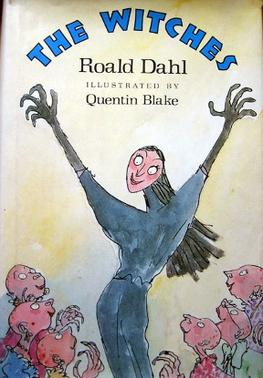The BFG (short for The Big Friendly Giant) is a 1982 children's book written by British novelist Roald Dahl and illustrated by Quentin Blake. It is an expansion of a short story from Dahl's 1975 book Danny, the Champion of the World. The book is dedicated to Dahl's late daughter, Olivia, who died of measles encephalitis at the age of seven in 1962.[1] As of 2009, the novel has sold 37 million copies in UK editions alone, with more than 1 million copies sold around the world every year
The Twits is a humorous children's book written by Roald Dahl and illustrated by Quentin Blake. It was written in 1979, and first published in 1980. The Twits was adapted for the stage in November 2007. The idea of The Twits was triggered by Dahl's desire to 'do something against beards', because he had an acute hatred of them. The first sentence of the story is, 'What a lot of hairy-faced men there are around nowadays!'
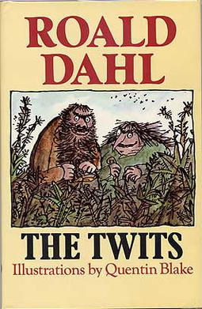Matilda is a sweet, exceptional young girl, but her parents think she's just a nuisance. She expects school to be different but there she has to face Miss Trunchbull, a menacing, kid-hating headmistress. When Matilda is attacked by the Trunchbull she suddenly discovers she has a remarkable power with which to fight back. It'll take a superhuman genius to give Miss Trunchbull what she deserves and Matilda may be just the one to do it!
The Witches is a children's dark fantasy novel by the British writer Roald Dahl. The story is set partly in Norway and partly in the United Kingdom, and features the experiences of a young British boy and his Norwegian grandmother in a world where child-hating societies of witches secretly exist in every country. The witches are all ruled by the extremely vicious and powerful Grand High Witch, who in the story has just arrived in England to organise her worst plot ever. But an elderly former witch hunter and her young grandson find out about the evil plan and now they must do everything to stop it and defeat the witches.
The BFG (short for The Big Friendly Giant) is a 1982 children's book written by British novelist Roald Dahl and illustrated by Quentin Blake. It is an expansion of a short story from Dahl's 1975 book Danny, the Champion of the World. The book is dedicated to Dahl's late daughter, Olivia, who died of measles encephalitis at the age of seven in 1962.[1] As of 2009, the novel has sold 37 million copies in UK editions alone, with more than 1 million copies sold around the world every year
The Twits is a humorous children's book written by Roald Dahl and illustrated by Quentin Blake. It was written in 1979, and first published in 1980. The Twits was adapted for the stage in November 2007. The idea of The Twits was triggered by Dahl's desire to 'do something against beards', because he had an acute hatred of them. The first sentence of the story is, 'What a lot of hairy-faced men there are around nowadays!'
 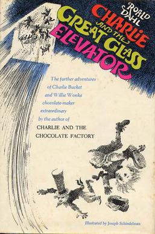
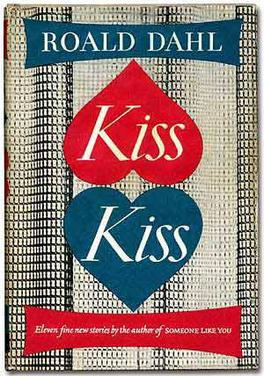
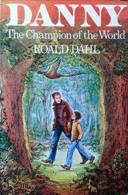
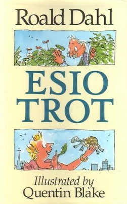
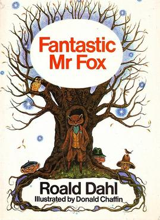
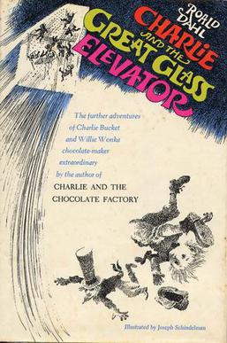
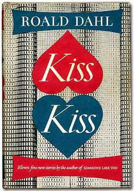
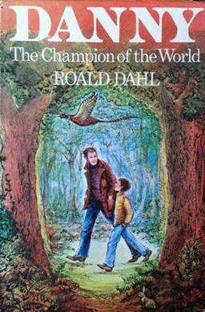
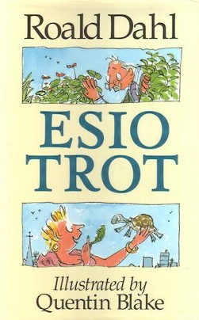
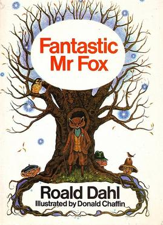
 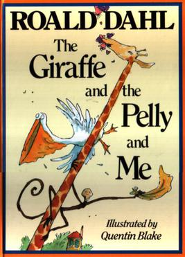
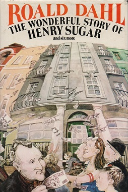
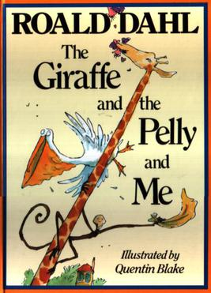
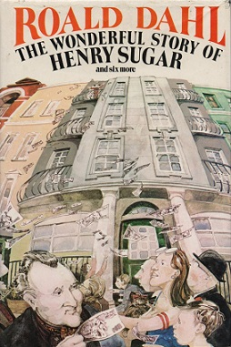

 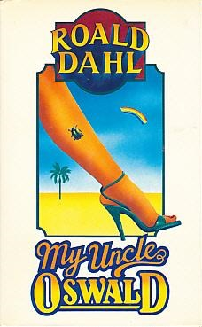
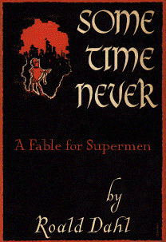
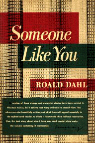
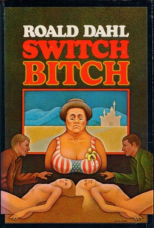
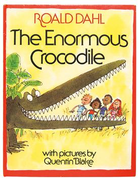
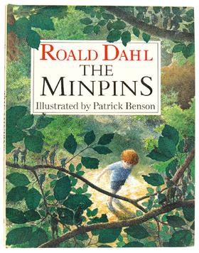
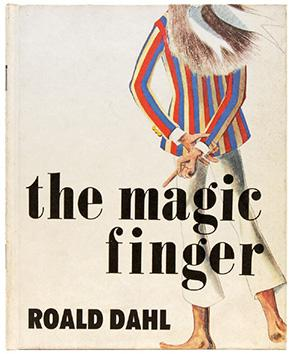
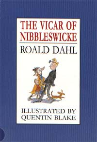
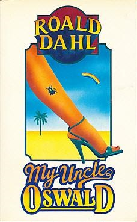
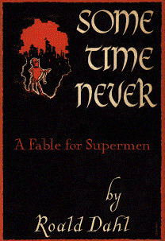
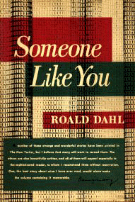
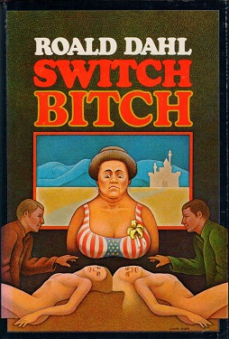
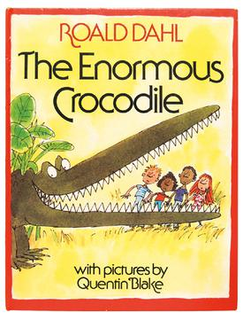
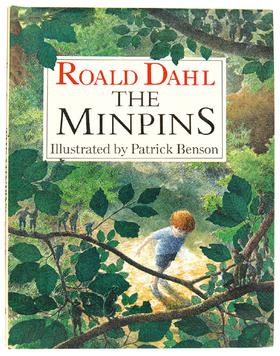
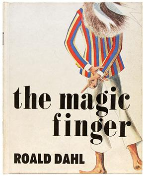
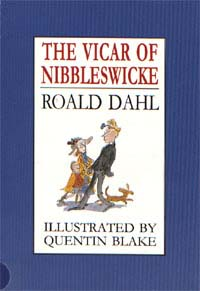